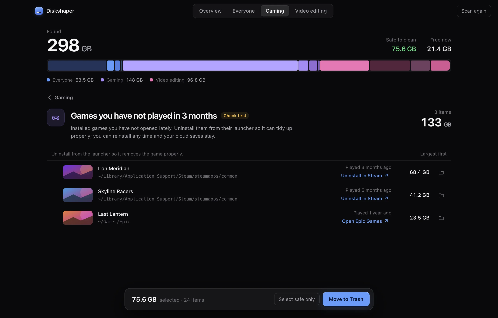
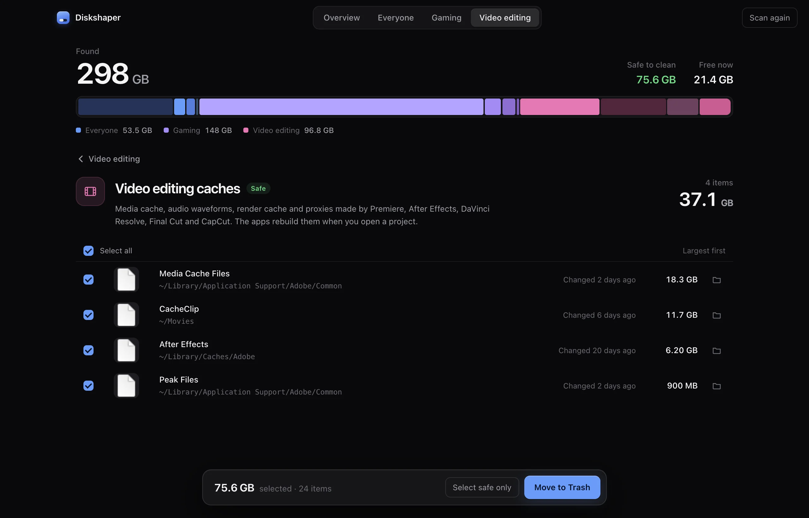
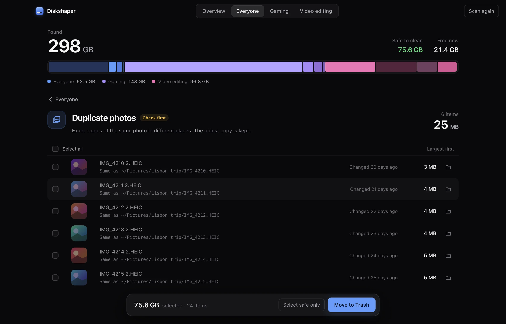

See what’s eating your storage.
Diskshaper scans your drive in seconds and sorts what it finds into plain groups: shader caches and game leftovers, editing caches and old renders, installers and duplicate photos. One click moves the safe stuff to the Trash, so you can always undo it.
Free and open source. No account, no ads, nothing uploaded.
For gamers
Games are the biggest thing on most drives, and they leave a mess when they go.
Diskshaper reads Steam, Epic, Heroic and CrossOver directly, so it knows which folders still belong to a game and which were left behind.
- Shader cachesGraphics data your games and GPU driver rebuild on their own.
- Leftovers from uninstalled gamesFolders Steam and Epic left behind after an uninstall.
- Games you stopped playingWith the last time you played and a button to uninstall from the launcher.
- Empty CrossOver bottlesWindows setups on a Mac whose game is long gone.

For video editors
Editing apps quietly keep tens of gigabytes of cache, previews and proxies.
Diskshaper finds them in the app folders and next to your projects, and tells you which ones the app will simply make again.
- Premiere, After Effects and Resolve cachesMedia cache, peak files, render cache and proxies.
- Render previews next to projectsThe preview folders Premiere and Final Cut save beside your project files.
- Duplicate footageThe same clip copied to three places. The oldest copy is kept.
- Old exportsBig renders untouched for six months, with a thumbnail of each.

For everyone
The everyday clutter: setup files you ran once, the same photo saved twice, and that 40 GB backup zip from your old laptop.
- Old installersDMG, PKG, EXE and MSI files in Downloads that already did their job.
- Duplicate photosExact copies, shown side by side with a thumbnail.
- Huge forgotten filesAnything over 1 GB that has not changed in three months.
- App cachesWith each app’s real icon, so you know what you are clearing.

Safe means safe.
Most cleaners show a long list and a big button. Diskshaper tells you what each thing is, whether it comes back on its own, and keeps everything undoable.
Plain labels
“Safe” means the app rebuilds it or you can download it again. “Check first” means only you know, so it is never ticked for you.
Always to the Trash
Nothing is deleted. Everything goes to the Trash or Recycle Bin, so you can put it back until you empty it.
Never system files
Diskshaper only looks in your own folders, app caches and game libraries. It does not touch macOS or Windows.
Reads only until you click
Scanning changes nothing. Only the items you tick are moved, and only when you press the button.
Duplicate photo finder
Pick a folder and see every duplicate and look-alike photo, right in your browser. Nothing is uploaded.
Open the finderGuides
How to clear your shader cache · How to remove Steam leftovers after uninstalling a game · How to clear the Premiere Pro media cache · How to clear the DaVinci Resolve cache
All guidesQuestions
Is Diskshaper really free?
Yes. There is no paid version, no trial and no ads. It is open source and made by Hollowbit Studio, who also make Fileshaper, Captionshaper and Writeshaper.
Will it delete something I need?
Not on its own. Only items you tick are touched, and they go to the Trash or Recycle Bin, not straight to deletion. Items marked “Check first” are never ticked for you.
Does it upload my files or track me?
No. The scan runs on your computer and nothing about you or your files is sent anywhere. The only time the app goes online is a once-a-day check for a new version, which you can turn off. There are no analytics.
Why is the space not free yet after cleaning?
Because everything goes to the Trash first, so you can undo it. Empty the Trash or Recycle Bin when you are happy and the space comes back.
Which computers does it run on?
macOS 11 Big Sur or newer (Apple Silicon and Intel), and Windows 10 and 11 (64-bit).
Get your space back.
Free and open source. No account, no ads, nothing uploaded.